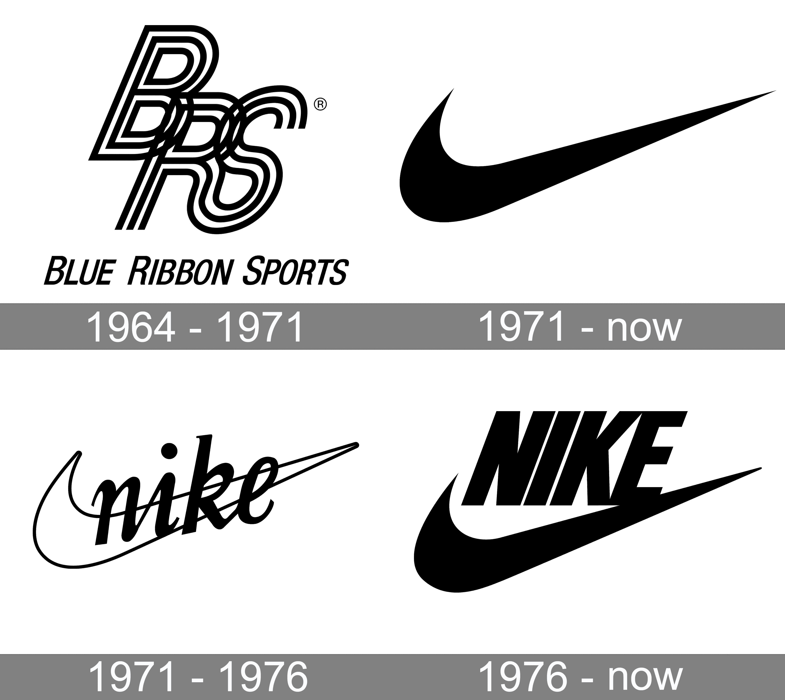
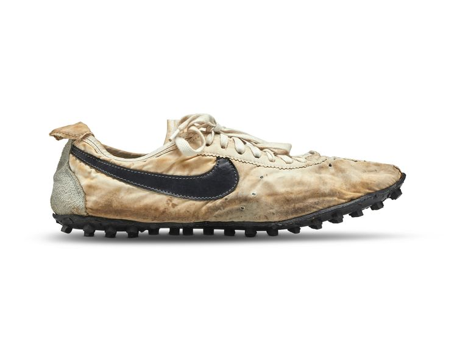

NIKE'S HISTORY


Nike, Inc., is one of the largest and best-recognized global sports and athleticwear brands.
Its extensive lineup includes its long-running Air Jordan, Air Force 1, and other “Air” models.
Converse shoes and apparel (including those bearing the iconic Chuck Taylor All Stars logo)
have also been a part of Nike since its 2003 acquisition.Nike is known for its celebrity endorsement
deals with top athletes, including Tiger Woods, LeBron James, and Serena Williams.
The company has stayed relevant with consumers over the years through its savvy marketing,
which includes embracing controversial topics. Since 2020, Nike has been led by president
and CEO John Donahoe, but cofounder and long-time CEO Phil Knight remains active in the company,
serving as chair emeritus.
The global sportswear giant traces its origins to 1962, when former University
of Oregon track-and-field athlete Phil Knight toured the Onitsuka (now Asics) factory in Japan and was impressed
by the firm’s quality and speedy production. The trip led to a deal to distribute the Onitsuka Tiger,
the company’s signature shoe, in the United States. By 1964, Knight and his former University of Oregon coach,
Bill Bowerman, formed Blue Ribbon Sports; they created the iconic Tiger Cortez in 1967, their version of
the Onitsuka Tiger.In 1971, Blue Ribbon split with Onitsuka; and the duo changed the firm’s name
to Nike, after the Greek goddess of victory. Its “swoosh” logo—which became one of the world’s
most recognized brand logos—was also introduced that year. Carolyn David, a Portland State
University design student, charged $35 for the logo, although Knight eventually gave her
500 shares of stock in 1983.